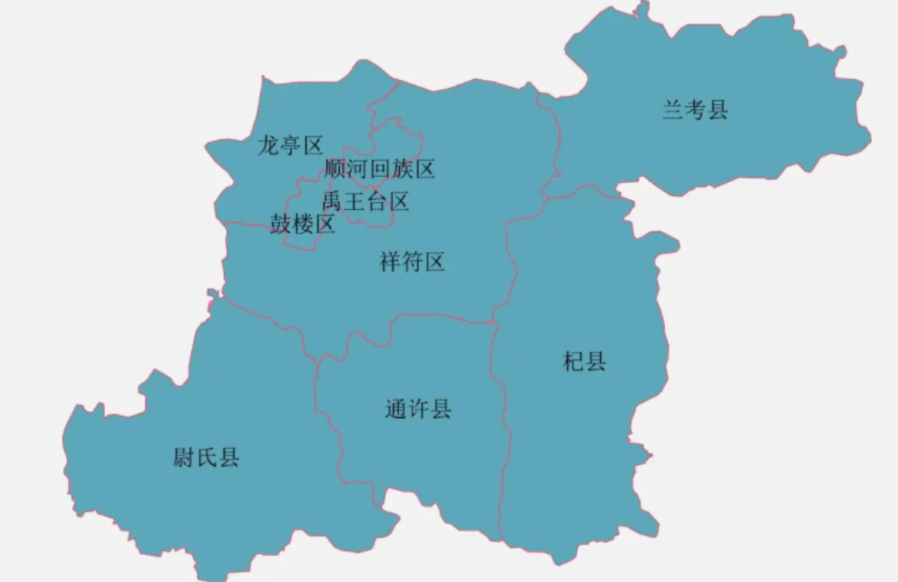
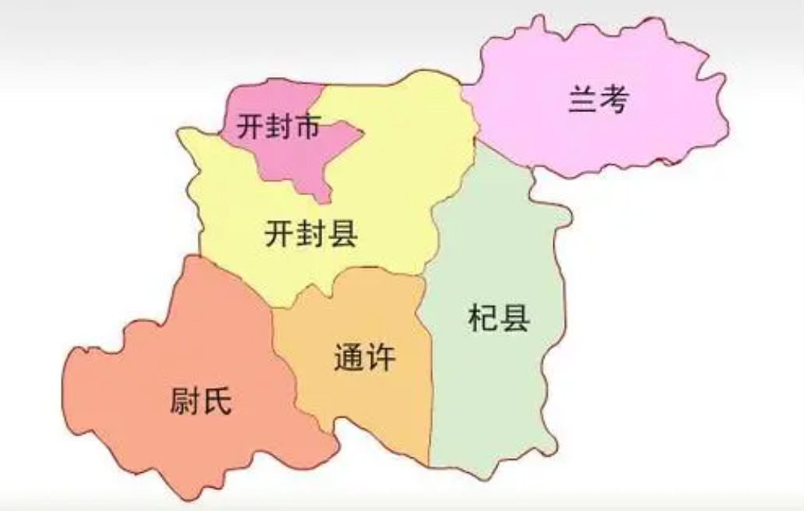

Geography & Location
Kaifeng is located on the alluvial plains of the middle and lower reaches of the Yellow River, in the central-eastern part of Henan Province. It borders the provincial capital Zhengzhou to the west, Shangqiu to the east, Xuchang and Zhoukou to the south, and the Yellow River to the north, facing Xinxiang across the river. The city covers a total area of 6,266 square kilometers with a built-up urban area of 151 square kilometers. Its strategic location on the Yellow River floodplain has shaped both its glorious past and its challenging history.

Administration
Kaifeng currently administers four counties (Qi County, Tongxu County, Weishi County, and Lankao County) and five districts (Longting District, Shunhe Hui District, Gulou District, Yuhuangtai District, and Xiangfu District), along with the Urban-Rural Integration Demonstration Zone. This administrative structure supports a population of over 4.5 million people, making it one of the major cities in the Central Plains region of China.

Economy & Development
In recent years, Kaifeng has maintained steady economic growth by adhering to its development strategy of industry as the foundation and projects as the priority. The city is part of the China (Henan) Pilot Free Trade Zone, one of the three major zones in the province. Kaifeng focuses on developing cultural tourism, modern manufacturing, and agricultural processing industries.

Culture & Arts
Kaifeng embraces cultural confidence and the philosophy of nurturing people through culture. The city leverages the highly penetrative, integrative, and cross-disciplinary nature of cultural tourism to strengthen itself through cultural development. From the world-famous Qingming Riverside Landscape painting to traditional Bian embroidery, from ancient Jewish heritage to Islamic culture, Kaifeng represents a remarkable fusion of diverse cultural traditions.